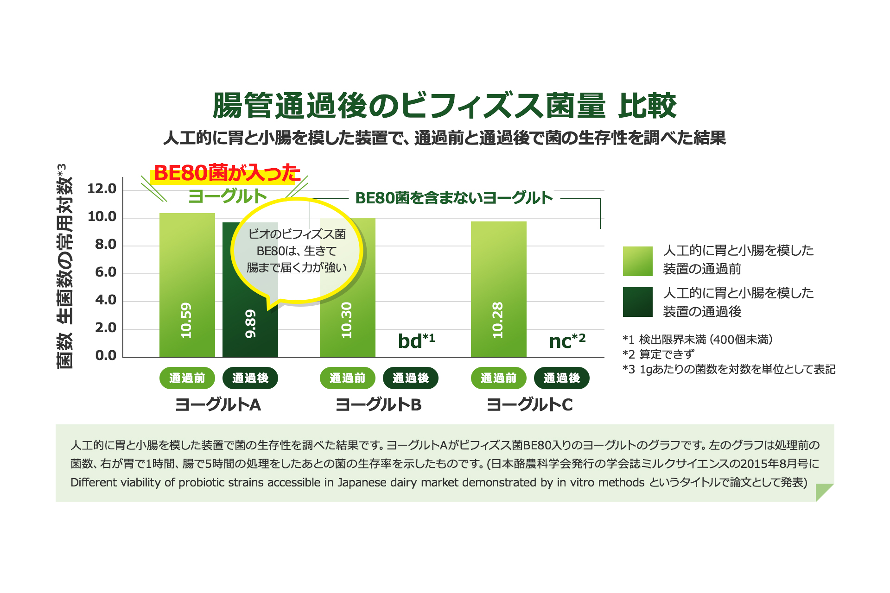

ビフィズス菌には違いがある！ビオのビフィズス菌BE８０は、フランスで特許取得*。 菌にこだわるヨーグルト、ダノンビオ。

BE80 は、生きて腸まで届く高生存ビフィズス菌です。通常よりも胃酸や胆汁酸に強く、生きて大腸まで多く届きます。ビフィズス菌BE80は伝統的な発酵乳の中から発見されました。ダノンが自社で保有する4,000株の菌の中で酸耐性に優れているという特性により選ばれた菌です。その“選ばれた菌”であるビフィズス菌BE80は、ほかの4種類の菌と組み合わせることにより、製品に中でその数を増やすことができるのです。
*DN_173010/CNCM I-2494(BE80)は、ダノン本社がフランスで特許取得